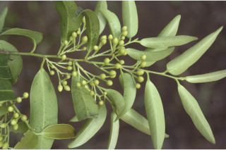
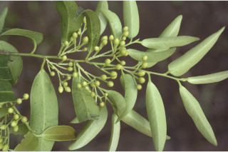

Trees up to 12 m tall.
12 ಮೀ. ಎತ್ತರದವರೆಗೆ ಬೆಳೆಯುವ ಮರಗಳು.
12 മീറ്റര് വരെ ഉയരത്തില് വളരുന്ന മരങ്ങള്.
மரம், 12 மீ. உயரம் வரை வளரக்கூடியது
Bark greyish, scaly; blaze reddish.
ತೊಗಟೆ ಬೂದು ಬಣ್ಣ ಹೊಂದಿದ್ದು, ಶಲ್ಕೆಗಳಿಂದ ಕೂಡಿರುತ್ತದೆ; ಕಚ್ಚು ಮಾಡಿದ ಜಾಗ ಕೆಂಪಾಗಿರುತ್ತದೆ.
ശല്ക്കങ്ങളോടുകൂടിയ നരച്ച നിറത്തിലുളള പുറംതൊലി, വെട്ട്പാടിന് ചുവപ്പുനിറം.
மரத்தின் பட்டை பழுப்பு நிறமுடையது, வெடிப்புகளுடையது; பட்டையின் உட்புறம் சிவப்பு நிறமுடையது.
Branchlets slender, terete, glabrous.
ಕಿರುಕೊಂಬೆಗಳು ತೆಳು ಹಾಗೂ ದುಂಡಾಗಿದ್ದು,ರೋಮರಹಿತವಾಗಿರುತ್ತವೆ.
അരോമിലവും, ഉരുണ്ടതുമായ, നേര്ത്ത ഉപശാഖകള്.
சிறிய நுனிக்கிளைகள் மெலிதானது, குறுக்குவெட்டுத் தோற்றத்தில் வளையமானது, உரோமங்களற்றது.
Leaves simple, alternate, distichous; petiole 0.4-0.9 cm long, glabrous, canaliculate above; lamina 4-12 x 1-2.7 cm, lanceolate, apex acute or acuminate with blunt tip, base acute to attenuate, margin entire, subcoriaceous, glabrous; midrib flat above, secondary_nerves ca. 8 pairs, branched, ascending towards apex; tertiary_nerves distinctly reticulate.
ಎಲೆಗಳು ಸರಳವಾಗಿದ್ದು ಪರ್ಯಾಯ ಹಾಗೂ ಸುತ್ತು ಜೋಡನಾ ವ್ಯವಸ್ಥೆ ಯಲ್ಲಿದ್ದು ಕಾಂಡದ ಎರಡೂ ಕಡೆಯ ಎದುರು ಬದರಿನ ಸಾಲಿನಲ್ಲಿರುತ್ತವೆ;ಎಲೆ ತೊಟ್ಟುಗಳು 0.4-0.9 ಸೆಂ.ಮೀ ಉದ್ದವಿದ್ದು ಮೇಲ್ಭಾಗದಲ್ಲಿ ಕಾಲುವೆಗೆರೆಸಮೇತವಿರುತ್ತವೆ ಹಾಗೂ ರೋಮರಹಿತವಾಗಿರುತ್ತವೆ; ಪತ್ರಗಳು 4 – 12 X 1 – 2.7 ಸೆಂ.ಮೀ. ಗಾತ್ರ ಭರ್ಜಿಯ ಆಕಾರ,ಚೂಪಾದ ಅಥವಾ ಮೊಂಡಾದ ಅಗ್ರವುಳ್ಳ ಕ್ರಮೇಣ ಚೂಪಾಗುವ ತುದಿ ; ಚೂಪಾದುದರಿಂದ ಹಿಡಿದು ಒಳಬಾಗಿದ ಬುಡ,ನಯವಾದ ಅಂಚು ಹಾಗೂ ಉಪ-ತೊಗಲನ್ನೋಲುವ ಮೇಲ್ಮೈ ಹೊಂದಿರುತ್ತವೆ; ಮೇಲ್ಭಾಗದಲ್ಲಿ ಮಧ್ಯನಾಳ ಚಪ್ಪಟೆಯಾಗಿರುತ್ತದೆ;ಎರಡನೇ ದರ್ಜೆಯ ನಾಳಗಳು 8 ಜೋಡಿಗಳಿದ್ದು, ಕವಲೊಡೆದಿರುತ್ತವೆ ಹಾಗೂ ತುದಿಎಡೆಗೆ ಆರೋಹಣಗೊಳ್ಳುತ್ತವೆ; ಮೂರನೇ ದರ್ಜೆಯ ನಾಳಗಳು ನಿರ್ದಿಷ್ಟವಾಗಿ ಜಾಲಬಂಧ ನಾಳ ವಿನ್ಯಾಸದಲ್ಲಿ ರುತ್ತವೆ.
ലഘുവായ ഇലകള്, ഏകാന്തരമായി, തണ്ടിന്റ രണ്ടുഭാഗത്ത് മാത്രമായടുക്കിയ വിധത്തിലാണ്; മുകളില് ചാലോട് കൂടിയ, അരോമിലമായ ഇലഞെട്ടിന് 0.4 സെ.മീ മുതല് 0.9 വരെ നീളം; പത്രഫലകത്തിന് 4 സെ.മീ മുതല് 12 സെ.മീ വരെ നീളവും 1 സെ.മീ മുതല് 2.7 സെ.മീ വരെ വീതിയും, കുന്താകൃതിയുമാണ്, പത്രാഗ്രം നിശിതമോ, മുനപ്പില്ലാത്ത ദീര്ഘാഗ്രാമോ ആണ്, പത്രാധാരം നിശിതംതൊട്ട് നേര്ത്തവസാനിക്കുന്നതുവരെയാണ്, അരികുകള് അവിഭജിതമാണ്, ഉപചര്മ്മിലപ്രകൃതം, അരോമിലം; മുഖ്യസിര മുകളില് പരന്നതാണ്, അഗ്രത്തോടടുത്ത് ആരോഹണക്രമത്തിലുളളതും, ശാഖിതവുമായ ഏതാണ്ട് 8 ജോഡി ദ്വീതീയ ഞരമ്പുകള്; ത്രിതീയ ഞരമ്പുകള് വ്യക്തമായും ജാലിതമാണ്.
இலைகள் தனித்தவை, மாற்றுஅடுக்கமானவை, இருநெடுக்கு வரிசையிலையடுக்கம் (டைஸ்டிக்கஸ்); இலைக்காம்பு 0.4-0.9 செ.மீ. நீளமானது, உரோமங்களற்றது; குறுக்குவெட்டுத் தோற்றத்தில் கேனாலிகுலேட்; இலை அலகு 4-12 X 1-2.7 செ.மீ., ஈட்டி வடிவமுடையது, அலகின் நுனி கூரியது அல்லது வால் போன்று நீண்டு மழுங்கியது, அலகின் தளம் கூரியது முதல் அட்டனுவேட், அலகின் விளிம்பு முழுமையானது, சப்கோரியேசியஸ், உரோமங்களற்றது; மையநரம்பு மேற்பரப்பில் அலகின் பரப்பிற்கு சமமானது; இரண்டாம் நிலை நரம்புகள் 8 ஜோடிகள், கிளைத்தது, நுனி நோக்கி வளைந்த நரம்புகள்; மூன்றாம் நிலை நரம்புகள் அகன்ற வலைப்பின்னல் அமைப்பு கொண்டது.
Flowers unisexual; male flowers in axillary cymes, pedunculate; female large, solitary, axillary.
ಹೂಗಳು ಏಕ ಲಿಂಗಿಗಳು; ಗಂಡು ಹೂಗಳು ಅಕ್ಷಾಕಂಕುಳಿನಲ್ಲಿನ ಅಕ್ಷದಿಂಡು ಸಹಿತವಾದ ಮಧ್ಯಾರಂಭಿ ಪುಷ್ಪಮಂಜರಿಯಲ್ಲಿರುತ್ತವೆ;ಹೆಣ್ಣು ಹೂಗಳು ದೊಡ್ಡ ಗಾತ್ರ ಹೊಂದಿದ್ದು ಅಕ್ಷಾಕಂಕುಳಿನಲ್ಲಿ ಒಂಟಿಯಾಗಿರುತ್ತವೆ.
പൂക്കള് ഏകലിംഗികളാണ്; ആണ്പൂക്കള്, പൂങ്കുലത്തണ്ടോടുകൂടിയ, കക്ഷീയ സൈമുകളിലുണ്ടാകുന്നു; പെണ്പൂക്കള് വലുതും, ഒറ്റക്ക് കക്ഷങ്ങളിലുണ്ടാകുന്നു.
ஓர்பால் மலர்கள்; ஆண்மலர்கள் இலைக்கோணங்களில் காணப்படும் சைம், மஞ்சரி காம்புடையது; பெண்மலர்கள் பெரியது, தனித்தவை, இலைக்கோணங்களில் அமைந்த மலர்கள்.
Berry, globose, to 2.5 cm across with fruiting_calyx_lobes accrescent, foliaceous; 4 seeded.
ಬೆರ್ರಿಗಳು 2 ಸೆಂ. ಮೀ.ವರೆಗಿನ ವ್ಯಾಸ ಹೊಂದಿದ್ದು ಗೋಳಾಕಾರದಲ್ಲಿದ್ದು ವೃದ್ಧಿಸಿದ, ಎಲೆ ರೂಪದ ದೃಢವಾಗಿ ನಿಲ್ಲುವ ಪುಷ್ಪಪಾತ್ರೆಯ ದಳಗಳ ಸಮೇತವಾಗಿರುತ್ತವೆ ಹಾಗೂ 4 ಬೀಜಗಳನ್ನೊಳಗೊಂಡಿರುತ್ತವೆ.
പത്രസമാനമായ, ഒട്ടിനില്ക്കുന്ന വീര്ത്ത ബാഹ്യദളങ്ങളോട് കൂടിയതും 2.5 സെ.മീ കുറുകേയുളളതുമായ കായ, 4 വിത്തുകളുളള ഗോളാകാര ബെറിയാണ്.
முழுச்சதைகனி (பெர்ரி), உருண்டையானது, 2.5 செ.மீ. குறுக்களவுடையது, உதிராத வளரக்கூடிய இலையை போன்று புல்லி இதழ்கள் கொண்டது, 4 விதைகளை உடையது.


 
